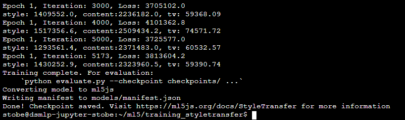
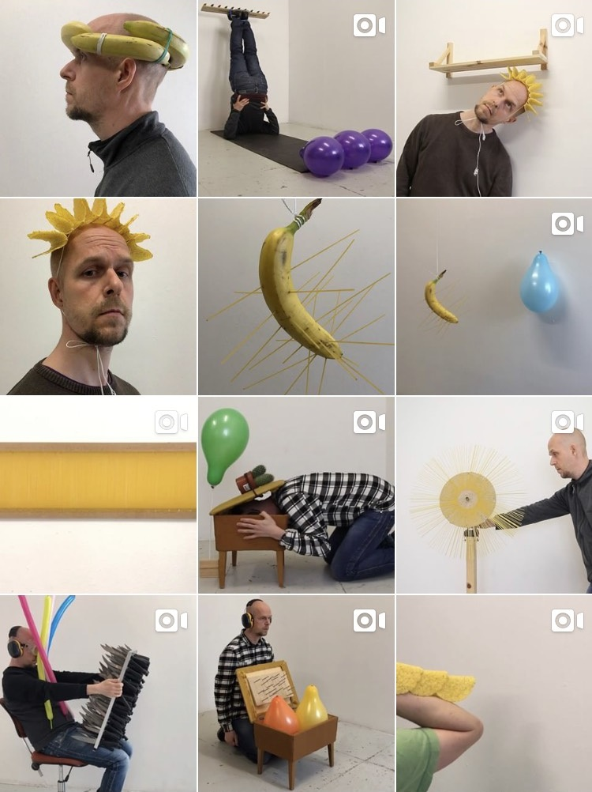
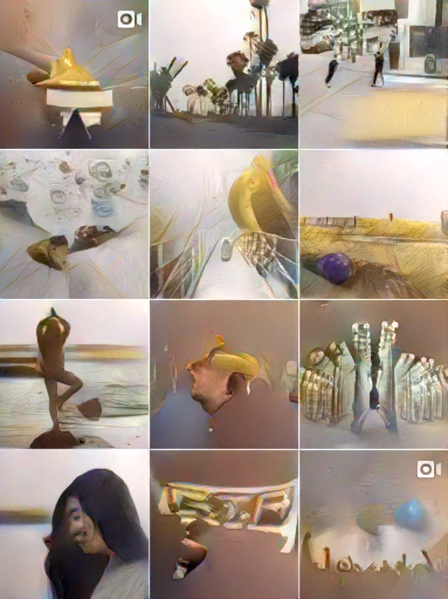
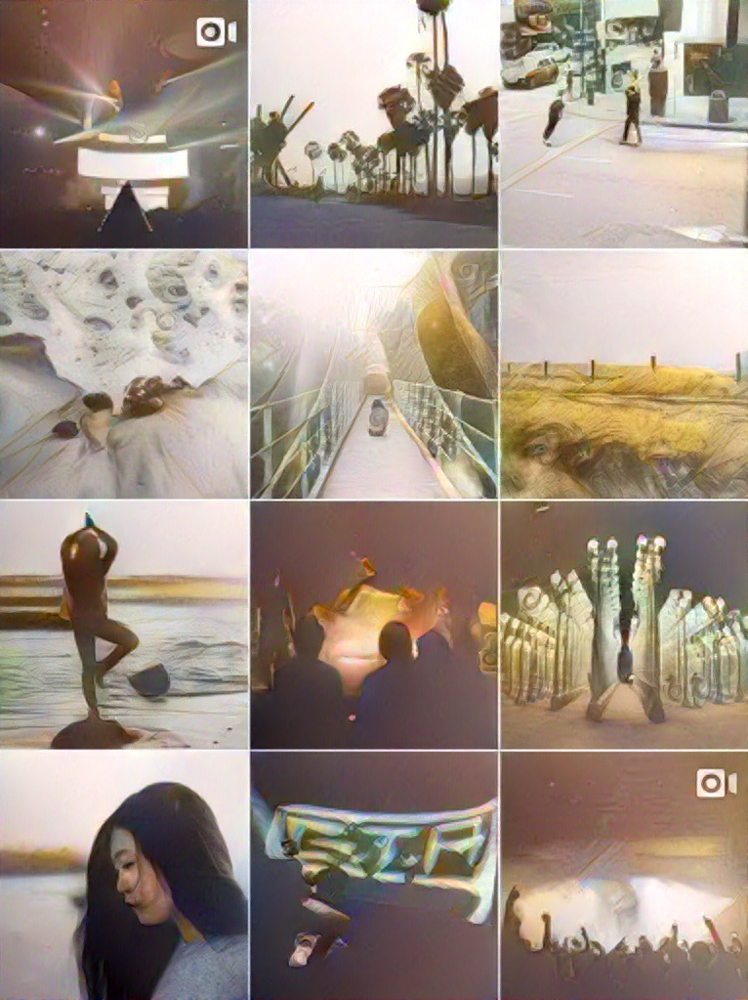
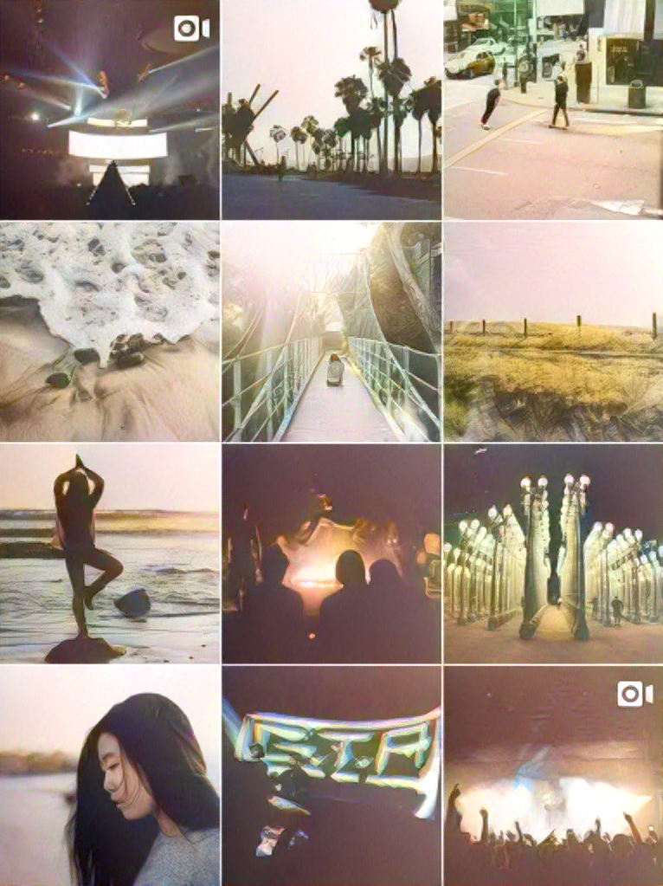
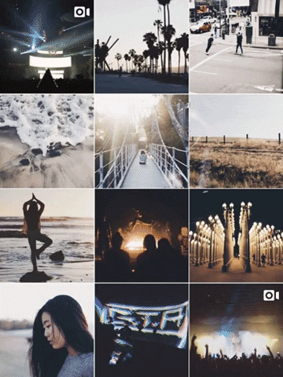
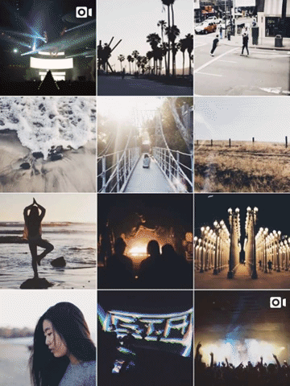
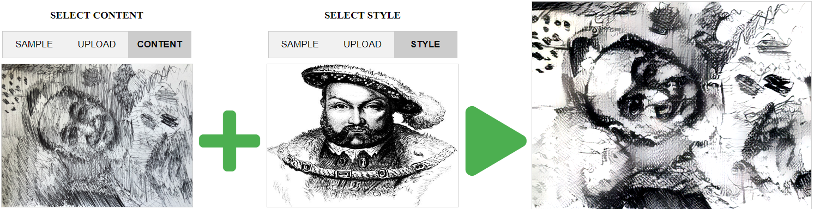
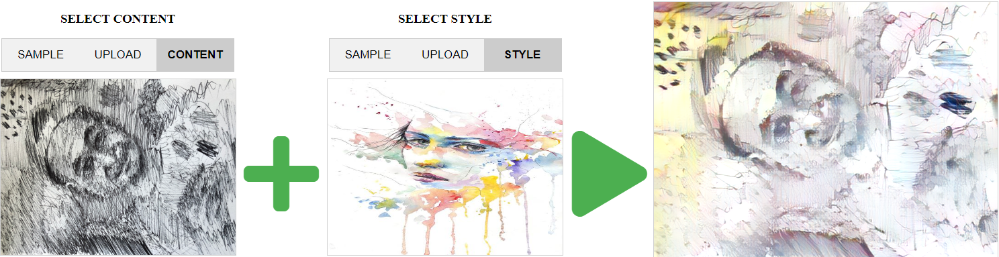

Sean Tobe
Style Transfer in 2019
Ml5js: styleTransfer()
- Download repository onto Jupyter UCSD Datahub
- pip install -r requirements.txt
- Edit style.py to train on your image: images/YOUR_STYLE_IMAGE.jpg
- I also changed batch size from 20 to 10 to increase performance, and training completes in 4-5 hours. Any longer, Datahub would stop my server while running.

I trained 2 models: one on the Instagram feed screenshot of a contemporary artist, Jan
Erichsen, and the other on one digital artwork by Zach Lieberman. The zachl model was
used in the style_mirror.js sketch. I have also included my 2 trained models and the style
transfer webcam mirror .zip files in the Journal Final Submissions.
Jan Erichsen:  Zach Lieberman:
Performance Notes
- @5:27 “The individual sitting there, using the television, should be able to use television not as the end product of the output of “reality”, but for beginning the construction of their reality.”
“Anything we put in is the raw material for end product for the mass media and becomes the beginning …
- @10:42 “Unpredictable system… a mirror that is a reflection of the seer, the observer externalizing/realizing their observations
- @14:47 Gene talks about the aesthetic artist manipulating the system, learning and realizing unknown possibilities.
“Showing yourself what you like” “Expanding the domain of possible descriptions… the less one description can control your behavior”
Style Transfer for Art
- Recent artist news on Style Transfer led me to a new method, STROTTS
- Style Transfer by Relaxed Optimal Transport and Self-Similarity
- (sounds like a competition to manifest the “best” style transfer, using NVIDIA gpus.)
- STROTTS doesn’t train the model of the “style image” for hours before applying to “content image”
- Got STROTSS to work on Jupyter! Transfer from content image to style image takes ~7mins.
Experiments with using selected content and style images with STROTTS on Datahub.
wt = 0.5 | wt = 2.5 | wt = 3.5 |
 |  |  |
Thought to make into GIFs to animate how/where the style is applied to which content:

- In even more recent Style Transfer news, our group decided to utilize SANET
- Demo your uploaded content/style image and adjust the style weight:
http://style.airi.kr/demo/
- Stylizing an image only takes a few seconds, a great improvement from 7mins with STROTTS. Though not as fast as using a trained model of a style image, shown by the style_mirror demo using webcam video feed.

